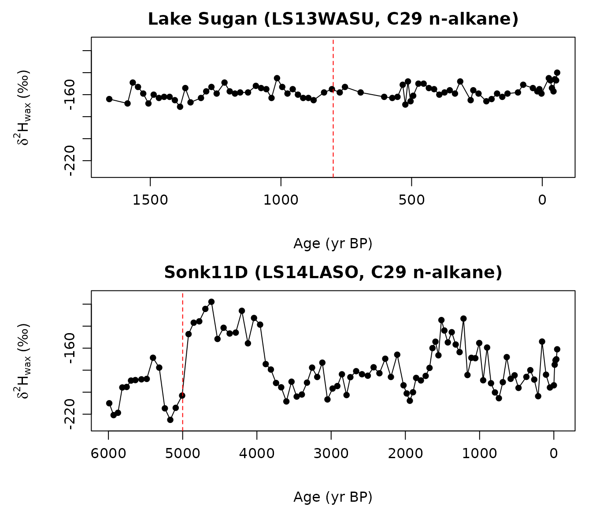

When can a leaf-wax record support a precipitation-isotope claim?
Source:vignettes/paleo-record-workflow.Rmd
paleo-record-workflow.RmdThis vignette works through a common problem: a leaf-wax record shows
a downcore change, and we want to know whether that change supports a
claim about precipitation isotopes. The package reconstructs
d2H_precip from measured d2H_wax, then asks
whether two time intervals differ by more than the calibration and
analytical noise.
The examples use two Iso2k records with different signal sizes and
sampling structures. Both use C29 n-alkane d2H_wax, the
compound class used by the calibration. The package includes small CSV
extracts with finite C29 rows from the source LiPD files. The extraction
script is in data-raw/.
| Package file | Iso2k record | Source study | Data archive |
|---|---|---|---|
LS13WASU_C29_d2H.csv |
LS13WASU, LiPD | Wang et al. (2013), doi:10.1177/0959683613486941 | Iso2k LiPD source |
LS14LASO_C29_d2H.csv |
LS14LASO, LiPD | Lauterbach et al. (2014), doi:10.1177/0959683614534741 | PANGAEA, doi:10.1594/PANGAEA.834963 |
The Iso2k compilation is archived at doi:10.25921/57j8-vs18.
detect_change() uses this per-sample detection
threshold:
Here rho_t is the lag-1 temporal autocorrelation,
sigma_residual is the calibration residual SD on the wax
scale, sigma_analytical is the analytical uncertainty on
the wax measurements, and beta_eff is the local effective
slope. The autocorrelation factor enters only the residual term, because
analytical measurement error is independent between samples by
construction. The threshold is the smallest d2H_precip
difference between two independent samples at the site that can be
distinguished from within-record noise at 95 percent confidence. The
spatial GP intercept is shared by all samples from the same site, so it
cancels when the package compares two intervals from one record.
1. Load both records
library(leafwax)
example_record_path <- function(filename) {
installed_path <- system.file(
"extdata", "example_records", filename,
package = "leafwax"
)
if (nzchar(installed_path)) {
return(installed_path)
}
source_paths <- file.path(
c("inst", file.path("..", "inst")),
"extdata", "example_records", filename
)
source_path <- source_paths[file.exists(source_paths)][1]
if (!is.na(source_path)) {
return(source_path)
}
stop("Could not locate example record: ", filename, call. = FALSE)
}
sugan_path <- example_record_path("LS13WASU_C29_d2H.csv")
sugan <- read.csv(sugan_path)
sugan$d2h_wax <- sugan$d2H_wax
sugan$age <- sugan$age_yrBP
sonk_path <- example_record_path("LS14LASO_C29_d2H.csv")
sonk <- read.csv(sonk_path)
sonk$d2h_wax <- sonk$d2H_wax
sonk$age <- sonk$age_yrBP
c(sugan_n = nrow(sugan),
sugan_range_pm = round(diff(range(sugan$d2h_wax)), 1),
sonk_n = nrow(sonk),
sonk_range_pm = round(diff(range(sonk$d2h_wax)), 1))
#> sugan_n sugan_range_pm sonk_n sonk_range_pm
#> 78.0 31.0 98.0 107.3Lake Sugan is at 38.8667° N, 93.95° E (2,800 m) in the Qaidam Basin. Sonk11D is at 41.7939° N, 75.1961° E (3,016 m) in the Central Tian Shan. In these extracts, Sugan spans -57 to 1657 yr BP, and Sonk11D spans -45 to 5989 yr BP.
2. Plot the wax records
First inspect the measured d2H_wax values and the
interval boundaries used below.
op <- par(mfrow = c(2, 1), mar = c(4.5, 5.4, 2.2, 1), mgp = c(3.4, 0.8, 0))
wax_ylim <- extendrange(c(sugan$d2h_wax, sonk$d2h_wax), f = 0.05)
plot_wax <- function(record, title, boundary, ylim) {
ord <- order(record$age)
plot(
record$age[ord],
record$d2h_wax[ord],
type = "o", pch = 16, col = "black",
xlim = rev(range(record$age)),
ylim = ylim,
xlab = "Age (yr BP)",
ylab = expression(delta^2 * H[wax] ~ "(‰)"),
main = title
)
abline(v = boundary, lty = 2, col = "red")
}
plot_wax(sugan, "Lake Sugan (LS13WASU, C29 n-alkane)",
boundary = 800, ylim = wax_ylim)
plot_wax(sonk, "Sonk11D (LS14LASO, C29 n-alkane)",
boundary = 5000, ylim = wax_ylim)
par(op)The dashed red lines mark the interval boundaries used later for change detection and claim assessment.
3. Claim levels used by assess_claim()
assess_claim() reports the highest claim level supported
by the record and the evidence supplied by the user. A level can pass
only if all lower levels pass.
| Level | Claim being made | What must be shown |
|---|---|---|
| 1 | Wax d2H changed between two intervals. |
The interval-mean wax contrast exceeds analytical uncertainty at the
chosen confidence level, after the requested rho_t
adjustment. |
| 2 | The wax change is consistent with directional hydroclimate change. | Level 1 passes, both
sediment_source_ruled_out and
depositional_artifact_ruled_out carry independent
record-specific evidence, AND either (a)
corroborating_proxies contains named, non-empty evidence
(the corroborating-evidence path), or (b) the observed
|delta_wax| exceeds the absolute 97.5% upper bound of the
vegetation-only envelope computed from a user-supplied
level2_vegetation_path$vegetation_scenario and
oipc_ref (the magnitude path; see Section 7b). |
| 3 | The record supports a quantitative d2H_precip
magnitude. |
Level 2 passes, a defended beta_eff is supplied, the
full inversion posterior is available, and the posterior probability of
exceeding magnitude_precip meets the requested confidence
level. |
| 4 | The quantitative magnitude can be attributed to precipitation isotopes. | Level 3 passes and independent evidence supports stationary vegetation, source-water seasonality, and evapotranspirative enrichment over the interval. |
The function checks that the required evidence fields are present. It does not decide whether the proxy interpretation or stationarity argument is scientifically adequate. That still requires record-specific evidence and citations.
4. Local effective slope
local_effective_slope() returns one slope value for each
posterior draw at the site. Each value combines the global
beta_d2Hp precipitation-isotope calibration slope with the
spatial slope GP. The function returns the model draws directly; it does
not cap or filter them. Passing the full vector to
invert_d2H() preserves paired slope uncertainty in the
likelihood mixture. Passing one number, such as the posterior median,
gives a point-slope sensitivity run. Zero or negative values are
retained; the Bayesian inverse does not divide by or clip individual
slope draws.
The examples below use baseline_sp (spatial intercepts +
slope GP, no environmental predictors) because its new-site
reconstruction design is complete. Calibration variants requiring
precipitation amount, the elevation basis, PFT terms, or isotope
interactions are currently refused by the inversion API rather than
evaluated with missing or defaulted covariates.
The full-posterior slope calculation is displayed but not evaluated when the source-package vignette is built because the bundled 100-draw fixture is deliberately blocked from inference. It runs after a complete frozen posterior deposit has been installed.
sugan_lon <- 93.95; sugan_lat <- 38.8667
sonk_lon <- 75.1961; sonk_lat <- 41.7939
slope_sugan <- suppressWarnings(local_effective_slope(
longitude = sugan_lon, latitude = sugan_lat,
model_name = "baseline_sp", n_draws = 100,
verbose = FALSE
))
slope_sonk <- suppressWarnings(local_effective_slope(
longitude = sonk_lon, latitude = sonk_lat,
model_name = "baseline_sp", n_draws = 100,
verbose = FALSE
))
rbind(
sugan = quantile(slope_sugan, c(0.025, 0.5, 0.975)),
sonk = quantile(slope_sonk, c(0.025, 0.5, 0.975))
)5. Invert wax values to precipitation values
invert_d2H() combines the wax-isotope likelihood under
every paired calibration draw with an explicit proper prior on
d2H_precip. The prior must be defended for the record; the
normal prior below is an executable example, not a package default. The
record_id argument tells the function that all rows belong
to one downcore record. All rows jointly update the shared
calibration-draw weights. return_full = TRUE, a requested
sample count, and an explicit seed produce the joint posterior draws
needed by detect_change().
The likelihood contains analytical uncertainty and the fitted residual SD. For contrasts within one record, posterior samples use the same selected calibration draw across rows, so the shared spatial GP intercept cancels in a within-draw contrast.
The remaining record-level chunks are displayed but not evaluated in the source-package vignette because the distributed 100-draw fixture is explicitly blocked from inference. They run only after a complete frozen posterior deposit has been installed.
record_prior <- d2h_prior_normal(mean = -70, sd = 30)
recon_sugan <- suppressWarnings(invert_d2H(
d2H_wax = sugan$d2h_wax,
d2H_wax_sd = rep(3, nrow(sugan)),
longitude = rep(sugan_lon, nrow(sugan)),
latitude = rep(sugan_lat, nrow(sugan)),
model_name = "baseline_sp",
n_posterior_draws = 100,
slope = slope_sugan,
record_id = "LS13WASU",
prior = record_prior,
return_full = TRUE,
n_inverse_samples = 1000,
seed = 20260801,
verbose = FALSE
))
recon_sonk <- suppressWarnings(invert_d2H(
d2H_wax = sonk$d2h_wax,
d2H_wax_sd = rep(3, nrow(sonk)),
longitude = rep(sonk_lon, nrow(sonk)),
latitude = rep(sonk_lat, nrow(sonk)),
model_name = "baseline_sp",
n_posterior_draws = 100,
slope = slope_sonk,
record_id = "LS14LASO",
prior = record_prior,
return_full = TRUE,
n_inverse_samples = 1000,
seed = 20260802,
verbose = FALSE
))6. Detection threshold and posterior probability of change
detect_change() compares the interval-mean
d2H_precip draws between two time intervals. For each
posterior draw, it subtracts the baseline interval mean from the test
interval mean. It returns a detection threshold and the posterior
probability that the interval difference exceeds target magnitudes. The
example uses sigma_residual = 16, the residual scale used
in the package’s spatial-model examples. For an analysis, use the
residual SD from the calibration being propagated.
estimate_temporal_autocorrelation() estimates lag-1
autocorrelation after ordering the record by age and subtracting a flat
mean. This AR(1) estimate is simple and transparent for nearly regular
records. Irregular paleo records need sensitivity tests or a method for
uneven sampling. Change-point tools such as bcp and
Rbeast answer a different question: they can test whether a
boundary or trend is supported, but they do not estimate the
rho_t term in the detection-threshold formula. A
Lomb-Scargle option is planned for v0.3
(method = "lomb_scargle").
The Sugan example compares the last eight centuries with the older part of the record; its wax contrast is small. The Sonk11D example compares 4-5 ka with 5-6 ka, where the extracted C29 n-alkane series has a much larger contrast.
rho_sugan <- estimate_temporal_autocorrelation(
sugan$d2h_wax, sugan$age, method = "ar1"
)
dc_sugan <- detect_change(
reconstruction = recon_sugan,
age = sugan$age,
baseline_interval = c(-100, 800),
test_intervals = list(older = c(800, 1700)),
sigma_residual = 16,
sigma_analytical = 3,
rho_t = rho_sugan,
beta_eff = stats::median(slope_sugan),
confidence = 0.95,
magnitudes = c(10, 30, 50)
)
rho_sonk <- estimate_temporal_autocorrelation(
sonk$d2h_wax, sonk$age, method = "ar1"
)
dc_sonk <- detect_change(
reconstruction = recon_sonk,
age = sonk$age,
baseline_interval = c(4000, 5000),
test_intervals = list(early_holocene = c(5000, 6000)),
sigma_residual = 16,
sigma_analytical = 3,
rho_t = rho_sonk,
beta_eff = stats::median(slope_sonk),
confidence = 0.95,
magnitudes = c(10, 30, 50)
)
list(
sugan = list(rho_t = round(rho_sugan, 3),
threshold_permil = round(dc_sugan$threshold, 1),
intervals = dc_sugan$intervals),
sonk = list(rho_t = round(rho_sonk, 3),
threshold_permil = round(dc_sonk$threshold, 1),
intervals = dc_sonk$intervals)
)The returned objects report the estimated lag-1 autocorrelation, the site-specific detection threshold, and the posterior probability that each interval contrast exceeds 30 per mil. These values are intentionally not embedded in the source-package vignette: they must be regenerated from the complete frozen posterior deposit and the declared prior.
7. Assess a claim
The next chunk asks whether each record supports a Level 4 claim of a
30 per mil d2H_precip change. The evidence strings are
placeholders that show the required API structure. They do not replace a
record-specific literature review.
build_claim <- function(beta_eff, rho_t, baseline, test, magnitude_precip) {
list(
level = 4,
interval_baseline = baseline,
interval_test = test,
sigma_analytical = 3,
rho_t = rho_t,
confidence = 0.95,
beta_eff = beta_eff,
magnitude_precip = magnitude_precip,
# Level 2 integrity gates: both must be ruled out by independent
# record-specific evidence regardless of which Level 2 path is used.
sediment_source_ruled_out = list(
value = TRUE,
evidence = "grain size and mineralogy stable across the interval"
),
depositional_artifact_ruled_out = list(
value = TRUE,
evidence = "continuous varved sequence with no erosional unconformity"
),
# Level 2 path (a): corroborating evidence against vegetation
# reorganization.
corroborating_proxies = list(
regional_proxy = "regional records show coeval shift"
),
vegetation_stationary = list(
value = TRUE,
evidence = "n-alkane chain length distributions stable across the boundary"
),
seasonal_source_stationary = list(
value = TRUE,
evidence = "regional d18O record shows no seasonality shift"
),
evapotranspirative_stationary = list(
value = TRUE,
evidence = "leaf-water proxy stable; no aridity transition"
)
)
}
sugan_record <- data.frame(
d2h_wax = sugan$d2h_wax,
age = sugan$age,
d2h_wax_err = rep(3, nrow(sugan))
)
sonk_record <- data.frame(
d2h_wax = sonk$d2h_wax,
age = sonk$age,
d2h_wax_err = rep(3, nrow(sonk))
)
verdict_sugan <- suppressWarnings(assess_claim(
record = sugan_record,
claim = build_claim(stats::median(slope_sugan),
rho_sugan,
c(-100, 800), c(800, 1700),
magnitude_precip = 30),
reconstruction = recon_sugan
))
verdict_sonk <- suppressWarnings(assess_claim(
record = sonk_record,
claim = build_claim(stats::median(slope_sonk),
rho_sonk,
c(4000, 5000), c(5000, 6000),
magnitude_precip = 30),
reconstruction = recon_sonk
))
c(sugan_highest_level = verdict_sugan$highest_level,
sugan_supported_at_4 = verdict_sugan$asserted_supported,
sonk_highest_level = verdict_sonk$highest_level,
sonk_supported_at_4 = verdict_sonk$asserted_supported)Read verdict$levels from top to bottom. Each row reports
whether a level passed and, if it failed, why. The verdict is
conditional on the complete posterior deposit, the declared inversion
prior, and the supplied evidence. The stationarity strings are
placeholders; a real Level 4 claim needs record-specific evidence and
citations.
7b. Magnitude path: rejecting vegetation as the sole explanation
The Level 2 corroborating-evidence path (section 7 above) requires
the user to name an independent line of evidence against vegetation
reorganization. When such evidence is not available, the package
provides a magnitude path: given a user-supplied
PFT-change scenario for the interval,
compute_vegetation_envelope() bounds how much wax contrast
vegetation reorganization alone can produce at the site, with
d2H_precip held constant by construction. If the observed
|delta_wax| exceeds the absolute 97.5% upper bound of that
envelope, vegetation-only causation is rejected for the supplied
scenario. Manuscript Supplementary Section S8.2 motivates the
vegetation-only framing; the four-level claim taxonomy is an additional
package workflow.
What passing the magnitude path rejects: a vegetation-only
explanation of the contrast under the supplied scenario. What it does
not do: identify the hydroclimate mechanism, quantify
the precipitation-isotope change, or address sediment-source change,
depositional artifact, compound-source mixing, age-model errors,
evapotranspirative regime change, or seasonality shifts. The two
integrity gates (sediment_source_ruled_out,
depositional_artifact_ruled_out) and the Level 4
stationarity-evidence fields remain the user’s responsibility. The
calibration coefficients are derived from spatial variation across
sites; applying them to within-record temporal vegetation change assumes
the same response holds through time at one location.
The function takes oipc_ref as a numeric scalar (the
calibration-period d2H_precip at the site, per mil), so the
user is in control of which OIPC raster product, version, and resampling
method is used. A typical workflow extracts a single value from the OIPC
raster (Bowen and Wilkinson 2002) using terra::extract()
outside the package before passing it in. The example below uses a
hypothetical value so the vignette compiles offline.
# Hypothetical OIPC value at Sonk11D. In a real analysis, extract from
# the OIPC raster at (sonk_lon, sonk_lat) using terra::extract().
sonk_oipc_ref <- -75 # per mil, illustrative only
# Hypothetical regional pollen scenario: a 30 percentage-point
# woody-to-grass transition across the interval, with a moderate C4
# increase. Names must be exactly tree, shrub, grass, C4 (case-sensitive).
env_sonk <- suppressWarnings(compute_vegetation_envelope(
oipc_ref = sonk_oipc_ref,
from = c(tree = 0.4, shrub = 0.3, grass = 0.2, C4 = 0.05),
to = c(tree = 0.1, shrub = 0.2, grass = 0.5, C4 = 0.20),
model_name = "full_interact_sp",
n_draws = 100,
verbose = FALSE
))
c(envelope_median = env_sonk$envelope_median,
envelope_p975_abs = env_sonk$envelope_p975_abs)A Level 2 claim built on this path supplies the same two integrity
gates plus a level2_vegetation_path$vegetation_scenario and
the top-level oipc_ref. The package treats this path as
equivalent to the corroborating-evidence path; in either case, the user
remains responsible for defending the supplied evidence or vegetation
scenario.
sonk_claim_magnitude <- list(
level = 2,
interval_baseline = c(4000, 5000),
interval_test = c(5000, 6000),
sigma_analytical = 3,
rho_t = rho_sonk,
confidence = 0.95,
sediment_source_ruled_out = list(
value = TRUE,
evidence = "grain size + mineralogy stable across the interval"
),
depositional_artifact_ruled_out = list(
value = TRUE,
evidence = "continuous varved sequence; no unconformity at the boundary"
),
oipc_ref = sonk_oipc_ref,
level2_vegetation_path = list(
vegetation_scenario = list(
from = c(tree = 0.4, shrub = 0.3, grass = 0.2, C4 = 0.05),
to = c(tree = 0.1, shrub = 0.2, grass = 0.5, C4 = 0.20),
evidence = "hypothetical 30-pp woody-to-grass scenario for the vignette"
)
)
)
verdict_sonk_magnitude <- suppressWarnings(assess_claim(
record = sonk_record,
claim = sonk_claim_magnitude
))
c(highest_level = verdict_sonk_magnitude$highest_level,
l2_passed = verdict_sonk_magnitude$levels$passed[2])When verdict_sonk_magnitude$levels$summary[2] reports a
pass, the text spells out the comparison and reiterates the
Supplementary Section S8.2 caveats. A real analysis would replace the
hypothetical PFT scenario with one derived from local or regional pollen
data, and oipc_ref with the value extracted from the user’s
chosen OIPC product.
8. Plot the reconstructions
op <- par(mfrow = c(2, 1), mar = c(4.5, 5.4, 2.2, 1), mgp = c(3.4, 0.8, 0))
precip_ylim <- extendrange(
c(recon_sugan$summary$d2h_precip_lower,
recon_sugan$summary$d2h_precip_upper,
recon_sonk$summary$d2h_precip_lower,
recon_sonk$summary$d2h_precip_upper),
f = 0.05
)
plot_recon <- function(rec, ages, title, boundary, ylim) {
ord <- order(ages)
plot(
ages[ord],
rec$summary$d2h_precip_median[ord],
type = "n",
xlim = rev(range(ages)),
ylim = ylim,
xlab = "Age (yr BP)",
ylab = expression(delta^2 * H[precipitation] ~ "(‰)"),
main = title
)
polygon(
c(ages[ord], rev(ages[ord])),
c(rec$summary$d2h_precip_lower[ord],
rev(rec$summary$d2h_precip_upper[ord])),
border = NA, col = adjustcolor("steelblue", alpha.f = 0.3)
)
lines(ages[ord], rec$summary$d2h_precip_median[ord],
type = "o", pch = 16, col = "black")
abline(v = boundary, lty = 2, col = "red")
}
plot_recon(recon_sugan, sugan$age,
"Lake Sugan (LS13WASU): small interval contrast",
boundary = 800, ylim = precip_ylim)
plot_recon(recon_sonk, sonk$age,
"Sonk11D (LS14LASO): large 4-6 ka contrast",
boundary = 5000, ylim = precip_ylim)
par(op)The shaded band is the 90 percent credible interval for each sample. It includes analytical uncertainty, regression-parameter uncertainty, the local slope posterior, and the calibration residual SD. The dashed red line marks the interval boundary used above.
Takeaway
A record’s ability to support a d2H_precip claim depends
on three quantities: the interval-mean d2H_wax contrast
relative to sigma_residual, the local effective slope, and
lag-1 temporal autocorrelation. detect_change() combines
these into a threshold and a posterior probability.
assess_claim() then checks the result against the four
claim levels. Small contrasts can fail at the first step. Large
contrasts can support directional and quantitative claims, but a Level 4
claim still requires independent evidence for stationarity.
Notes
- The vignette uses 100 posterior draws so it runs quickly. For final
reconstructions, use the full posterior by omitting
n_drawsandn_posterior_draws. -
estimate_temporal_autocorrelation()uses a flat-mean lag-1 estimator and works best for nearly regular spacing. For irregular paleo records, use sensitivity analyses or an uneven-sampling autocorrelation method forrho_t. UsebcporRbeastfor complementary change-point or trend checks, not as directrho_testimators.